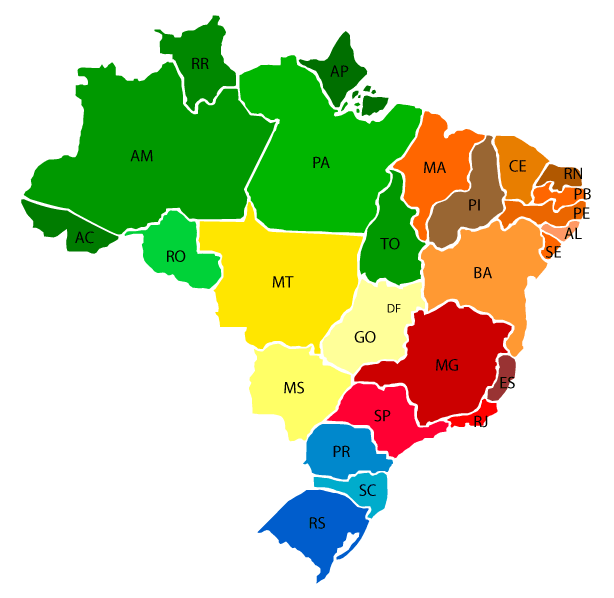

BSI
A graduação em Sistemas de Informação forma profissionais habilitados a repassar informações com segurança e eficiência dentro de uma organização. Você aprenderá a planejar, analisar, gerenciar e implementar modernas soluções de tecnologia. Saiba como administrar de maneira eficaz o fluxo de informações geradas e distribuídas por redes de computadores de um local.
Voltar
ADS
No curso de Tecnologia em Análise e Desenvolvimento de Sistemas da Unoeste, você encontra como diferencial uma organização moderna que te envolve em atividades práticas de situações simuladas e reais desde as primeiras aulas. Você terá um ambiente mais próximo da sua futura atuação profissional, além do suporte do corpo docente com vasta experiência.
Em Análise e Desenvolvimento de Sistemas EAD, você aprenderá a criar aplicações web e mobile, usando as tecnologias mais recentes. Estudará como gerenciar projetos usando as melhores práticas e metodologias e construir bancos de dados padrão SQL e NoSQL. Como aluno, também trabalhará com os principais frameworks de desenvolvimento de software, utilizará cloud computing e desenvolverá habilidades de empreendedorismo.
Voltar
Engenharia de Software
A Engenharia de Software forma engenheiros de alto nível, com habilidades empreendedoras e cooperativas. Desenvolva sistemas de software de qualidade e atue em diferentes áreas de conhecimento dentro de um crescente mercado de trabalho.
Tenha domínio sobre metodologias de programação e de processos de desenvolvimento de software com a Engenharia de Software da Unoeste. Além de construir e gerir sistemas de software, conheça aspectos relativos à garantia da qualidade, inovação e tecnologias já existentes.
Voltar